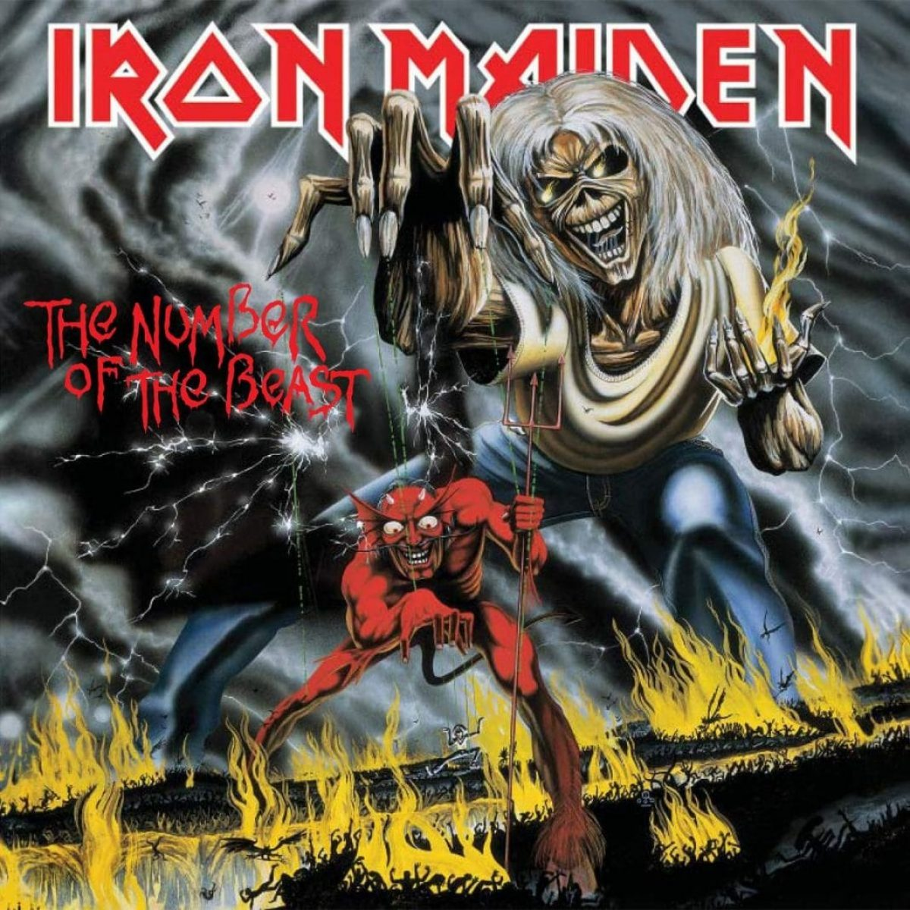

Iron Maiden es una banda británica de heavy metal de Leyton en el East End de Londres, fundada por el bajista Steve Harris en 1975. Iron maiden es una de las bandas mas exitosas e influyentes del New Wave British Heavy Metal.
Iron Maiden y su icónica mascota Eddy
Probablemente la banda más emblemática del heavy metal, Iron Maiden ha contribuido decisivamente a impulsar el género e influido en sucesivas generaciones de músicos que se inspiraron en el inconfundible "sonido Maiden". El impresionante despliegue de medios en sus actuaciones en directo no tenía parangón y marcó nuevos estándares en lo que a efectos ópticos y acústicos se refiere. Los ritmos atronadores a velocidad vertiginosa y la voz estridente del solista se combinaban con un tremendo despliegue luminotécnico y multitud de símbolos fantasmagóricos, entre ellos un esqueleto de tres metros de altura llamado Eddy the Knife, mascota de la banda.
Miembros Actuales
Steve Harris(Lider)
Bajo (1975-presente),Teclado (1997-presente)
Dave Murray
Guitarra (1976-1977, 1978-presente)
Adrian Smith
Guitara (1980-1990, 1999-presente)
Bruce Dickinson
Vocalista (1981-1993, 1999-presente)
Nicko McBrain
Bateria (1982-presente)
Janick Gers
Guitara (1990-presente)
los 5 mejores discos de Iron Maiden
The Number Of The Beast
(1982)
Las canciones mas escuchadas
- Run To The Hills
- Hallowed Be Thy Name
- The Number of the Beast
Powerslave
(1984)
Las canciones mas escuchadas
- Aces High
- 2 Minutes to Midnight
- Rime of the Ancient Mariner
Seventh Son Of A Seventh Son
(1988)

Las canciones mas escuchadas
- Moonchild
- The Evil That Men Do
- Can I Play With Madness
Piece Of Mind
(1983)

Las canciones mas escuchadas
- The Trooper
- Flight Of IcarusStill Life
- Revelations
Killers
(1981)
Las canciones mas escuchadas
- The Ides of March
- Wrathchild
- Twilight Zone
Los 3 mejores concerts Iron Maiden
HAMMERSMITH (1982)
Hammersmith Odeon de Londres el 20 de Marzo de 1982 dentro de su gira Beast on the Road
LIVE AFTER DEATH
Durante el transcurso de la gira World Slavery Tour se grabaron una serie de conciertos, presentados en el Hammersmith Odeon, Londres y en Long Beach, California.
Maiden England
Maiden England es otro clásico básico de la videoteca de todo fan de La Doncella de Hierro que se precie. El vídeo está dirigido por el propio Steve Harris y recopila lo más destacado de las actuaciones realizadas en Birmingham los días 27 y 28 de Noviembre de 1988, pertenecientes a la gira Seventh Tour of a Seventh Tour